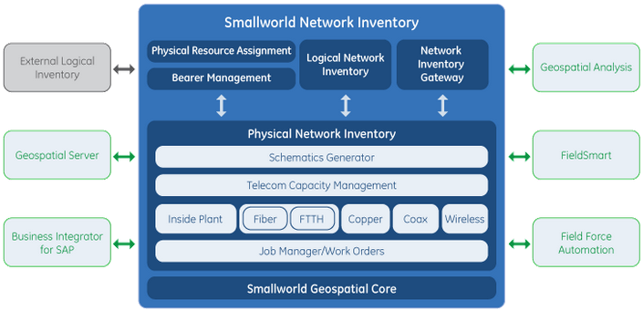
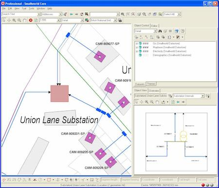
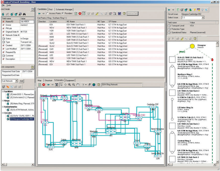
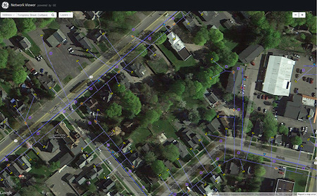
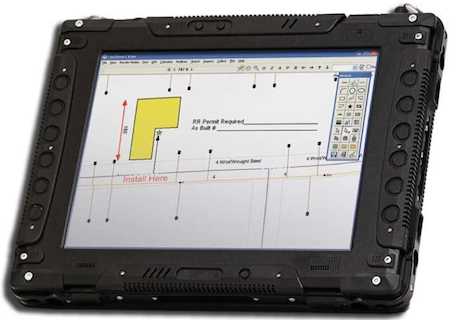

GE Smallworld Network InventoryTM
Комплексные решения для телекоммуникаций
Принятие решений, основанных на неактуальных и неполных данных, а также отсутствие точных инструментов для работы с этими данными ведут к серьезным потерям для бизнеса компании. В рамках жесткой конкуренции необходимы эффективные решения для поддержки всех ключевых бизнес и технологических процессов компании.
Изменение подхода к управлению сетевой информацией, критичной для бизнеса, дает возможность уверенно смотреть в будущее.
Ключ к успеху на рынке
Сегодня, телекоммуникационные компании все больше осознают, что сам факт предоставления комплексных и взаимосвязанных сервисов не является достаточным для успешности бизнеса. Определяющим условием является способность предоставлять сервисы эффективно, с наименьшими затратами и с наилучшим качеством. Создание оптимальных бизнес процессов и эффективное управление ими требуют консолидированного взгляда на всю сеть оператора.
Огромное влияние на бизнес оказывает возможность предоставлять доступ для всех заинтересованных сотрудников к интересующим сетевым ресурсам со всеми физическими подробностями реального мира. Цельное, основанное на ГИС представление всех аспектов сети, дает возможность указать точное расположение всех ваших активов, их детальные характеристики и взаимосвязи.
Это позволяет ускорить принятие решений и реагировать на потребности клиентов с опережением.
Такие возможности может предоставить современная интеллектуальная система, позволяющая управлять всеми сетевыми ресурсам, что позволяет использовать ее практически в каждом департаменте телекоммуникационной компании, от департаментов планирования развития сети и департамента обслуживания сети, до департаментов продаж и маркетинга, позволяя всем им выполнять ежедневные задачи максимально эффективно, опираясь на актуальные и достоверные данные.
GE Energy предлагает мощное промышленное решение Smallworld Network Inventory. Эта система используется мировыми лидерами телекоммуникационной индустрии для стратегического контроля над сетевыми активами и получения полностью готовой к предоставлению сервисов сети, которая отвечает всем нуждам и запросам клиентов.
Интеллектуальная система инвентаризации Smallworld является критически важной для достижения в долгосрочном плане успеха бизнеса сервис-провайдера. Комбинация пространственно-точной инвентаризации, интегрированные интеллектуальные средства планирования и принятия стратегических решений позволяют сервис-провайдеру управлять всем жизненным циклом инвестирования в обновление и развитие сетей, позволяя значительно сократить капитальные и операционные вложения.
Интеллектуальный техучет
Решение Smallworld Network Inventory обеспечивает консолидированный и законченный взгляд на все телекоммуникационные сети оператора, через которые услуги доставляются клиентам. Это всеобъемлющее и интегрированное представление сети объединяет полностью связанное между собой коммуникационное оборудование, размещаемое как внутри помещений оператора, так и снаружи, с потоками и сервисами логических сетей.
Использование передового решения GE Energy дает возможность вводить и визуально отображать сложные пространственные данные, встроенные CAD-инструменты позволяют планировать развитие сети, развитый функционал помогает обслуживать сетевую инфраструктуру и эффективно управлять доступной емкостью, важной для предоставления сервисов клиентам. Как результат - снижение затрат на эксплуатацию и развитие сетей, высокая скорость и качественное предоставление сервисов клиентам.
Продукт Smallworld Network Inventory наиболее важная часть OSS-систем (Operations Support Systems), поддерживающая бизнес процессы. Уполномоченным сотрудникам предоставляется свободный доступ к полным физическим и логическим моделям сети, что играет первостепенную роль в процессах планирования и эксплуатации, процессах предоставления сервисов и гарантированности их качества.
В дополнение, эти ценные данные могут быть предоставлены по всему предприятию, для поддержки такой деятельности как маркетинг, управление взаимоотношениями с клиентами, финансы и отчетность. Результат – надежная, проверенная, удовлетворяющая всем высоким стандартам система.
Объективные преимущества Решения
Smallworld Network Inventory - широко масштабируемое решение поддерживает обширный список из более чем 140 клиентов в 37 странах по всему миру. В этот список входят не только крупные национальные телекоммуникационные операторы, такие как Казахтелеком, Deutsche Teleсom, Swiss Telecom, но и небольшие компании с оборотом менее 1 млн. евро в год. Благодаря широкому набору технологических модулей, решение одинаково хорошо подходит кабельным мультисервисным операторам, операторам кабельного телевидения, операторам дальней связи, сотовым операторам и операторам беспроводной связи. Решение Smallworld Network Inventory успешно работает даже в самых тяжелых условиях, когда конкурирующие продукты не справляются со своими задачами. Подлинная масштабируемость означает, что система Smallworld Network Inventory полноценно работает даже в самых крупных телекоммуникационных компаниях с их обширными базами данных в сотни терабайт и тысячами пользователей системы. И, конечно, решение также хорошо подходит для средних и маленьких операторов. Использование системы Smallworld Network Inventory позволяет обеспечить быстрый возврат инвестиций:
- Сократить капитальные расходы на сетевую инфраструктуру, за счет точечного строительства и максимального использования сетевых ресурсов.
- Сократить операционные расходы за счет лучшего планирования, эксплуатации и большей производительности персонала.
- Быстрый возврат вложений на строительство сетей за счет точно выбранного направления развития.
- Быстрое предоставление услуг с минимальными ошибками и минимизированными рисками благодаря полным и актуальным данным по сетевым ресурсам.
- Сокращение времени простоя сети благодаря быстрому и точному определению неисправностей на сети.
- Сокращение времени на устранение неисправностей благодаря быстрому и точному определению места разрыва кабеля и неисправного оборудования.
- Значительно возрастает удовлетворенность потребителей обработкой их запросов на получение новых сервисов и сокращением времени простоя сети.
Планирование и конструирование
Система Smallworld Network Inventory переводит на новый уровень точность процессов планирования, разработки и проектирования сетей. Это позволяет принимать решения, опираясь на полные, связанные и актуальные физические и логические данные сети. Интеграция с системой Field Force Automation дает дополнительные преимущества на этапах инсталляции нового оборудования благодаря возможности контроля и управления в реальном времени мобильными группами технических специалистов.
Приложение Physical Network Inventory (Физическая Инвентаризация Сетей) обеспечивает полное и законченное представление физической сети на основе быстрой ГИС; поддерживает множество телекоммуникационных технологий, включая IP/MPLS и PON, а также все многообразие оборудования от различных производителей (поддерживается ведение каталога оборудования). Моделирование начинается с построения магистральных сетей, переходит в сети доступа и заканчивается на местах потребителей. Комбинация оборудования размещаемого внутри зданий и снаружи дает представление обо всей сети, от портов оборудования размещаемого в стойках до внешнего кабельного хозяйства (как оптического, так и медного). Полностью моделируются как подземные, так и воздушные линии связи. Инструменты проектирования помогают быстро разрабатывать проекты новых сетей, в то время как Job Manager (функционал для работы с проектами) управляет процессом конструирования новых сетей. Система выдает важные для построения сетей отчеты, включая отчеты по соединениям муфт, стоимости материалов и последовательности выполнения работ. Для обслуживания и проведения ремонтных работ крайне полезны возможности различных трассировок, включая OTDR.
Приложение Logical Network Inventory (Логическая Инвентаризация Сетей) обеспечивает возможность по документированию, моделированию и управлению логическими сетями, включая сетевые элементы, звенья (логические соединения), кольца и подсети, VLAN и VPN, а также магистральные потоки, клиентские потоки и сервисы, которые проходят через физическую сеть. Вы можете планировать емкости, выделять каналы и связывать с ними потоки и сервисы, и быть уверенным, что Ваша сеть шагает в ногу с потребностями в новых сервисах и новых подключениях, используя пропускную способность сети настолько эффективно, насколько это вообще возможно.
Приложения Logical Network Inventory и Physical Network Inventory бесшовно (единый пользовательский интерфейс) интегрируются друг с другом. Поэтому, при неисправности физического оборудования всегда можно определить какие сервисы каких клиентов затронуты. И наоборот, при выходе из строя сервиса возможно отследить всю физическую линию, по которой предоставляется сервис, с определением точного месторасположения оборудования и его спецификации.
Возможности Field Force Automation обеспечивают точечное управление мобильными группами, продвинутую координацию, оптимизацию маршрутов передвижения и инсталляционных работ и контроль над их исполнением.
Поддержка критически важных операций
Интеграция – основной способ автоматизации сквозных бизнес процессов при помощи систем OSS. Smallworld Network Inventory предоставляет стандартный интерфейс для интеграций, использующий основанный на XML обмен данными через оболочку Enterprise Application Integration, давая доступ к физическим и логическим данным приложениям, функционирующим согласно рекомендациям TeleManagement Forum’s enhanced Telecom Operations Map® (eTOM). Предоставление сервисов. Система Smallworld Network Inventory может быть интегрирована с системами инициализации (provisioning) и активации сервисов. Интеграция с этими системами возможна при помощи общего пред-сконфигурированного интерфейсного адаптера, что существенно снижает время развертывания интеграции, делая это решение уникальным предложением на рынке программного обеспечения. Такой подход позволяет операторам предоставлять новые сервисы, основываясь на точных знаниях о сетевой структуре лежащей в их основе, причем, как существующей, так и планируемой на будущее. Результат – более эффективное предоставление сервисов и быстрый возврат финансовых вложений. Гарантированность сервисов. Через интеграцию с системами управления сетями (NMS), система Smallworld Network Inventory дает возможность визуально определить место аварии на сети, с определением точного географического и пространственного положения, совершенно точно определить какие сервисы и клиенты затронуты неполадками, предпринять меры для минимизации влияния аварии на клиентов, быть уверенным, что работы по устранению неполадок пройдут оперативно и эффективно. Как результат улучшение в качестве обслуживания клиентов, большая удовлетворенность клиентов от сервиса. Итог - весомое конкурентное преимущество.
Доступ в масштабах всего предприятия
Smallworld Network Inventory становится стратегически важным бизнес ресурсом, предоставляя пользователям легкий доступ к полным, актуальным сетевым данным. Проектировщики, планировщики, монтеры, маркетологи, операторы на сети, отдел поддержки пользователей и др., все они могут получить данные в любой наиболее удобной им форме, от географических карт, различных схематик до табличных форм и отчетов. Через настольный компьютер, через портативный компьютер, через переносные «полевые» системы для монтеров, через локальную сеть или Интернет.
Network Inventory Gateway делает данные, хранящиеся в Smallworld Network Inventory, доступными для всего предприятия, как через локальную сеть, так и через Интернет. Пользователи, выполняющие определенные специфические задачи могут получать доступ к инвентаризационным данным через интерфейс, специально спроектированный под их работы. Например, сотрудник абонентского отдела может пользоваться Network Inventory Gateway для оперативного ответа на запрос клиента по предоставлению определенных сетевых ресурсов или сервиса.
Smallworld Field Information System предоставляет специалистам по инсталляции и обслуживанию оборудования удаленный доступ к данным системы Smallworld Network Inventory, содействуя не только в установке нового оборудования, но и в процессах устранения сетевых неполадок. Работая в независимом от основной системы режиме, только с нужным поднабором сетевых данных и картами, эти мобильные пользователи могут в любой момент передать данные прямо с места проведения работ. Обновленная информация напрямую передается в центральную базу данных Smallworld Network Inventory и мгновенно становится доступной всем заинтересованным лицам.
Smallworld Geo Spatial Analysys позволяет нетехническим специалистам сочетать Smallworld Network Inventory с данными нетехнического характера, например, с демографическими данными, хранящихся в различных источниках данных (MS Excel, MS Access, БД MySQL, БД Oracle, данные получаемые с помощью web-сервисов и т.д.). Такая комбинация может быть использована, например, для маркетинговых исследований, позволяя выделить потенциально выгодные направления для развития сетей и услуг. Smallworld GeoSpatial Analysis основан на концепции бизнес объектов, которые связывают пространственную и непространственную информацию, карты, фотографии, документы и вэб-сайты уникальным и гибким способом. Эти объекты должны покрывать потребности конечных пользователей и служить основой для более детального анализа и дальнейшей визуализации. Таким образом, данные становятся доступными по всему предприятию, снабжая широкий круг пользователей возможностями по визуализации информации, запросами, анализом и отчетами.